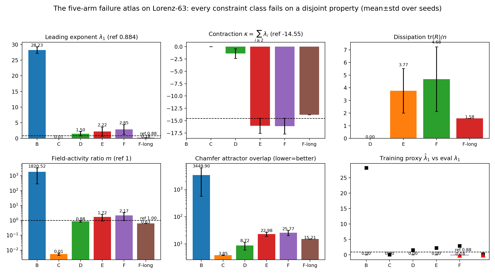
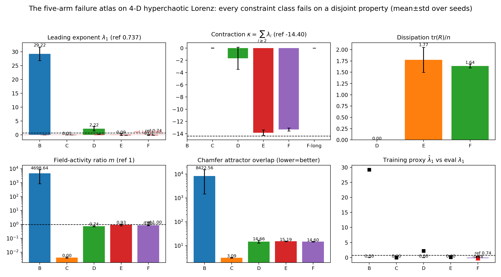

World models that operate in a learned latent space (JEPA; LeCun 2022) are the leading bet for sample-efficient, long-horizon model-based RL (DreamerV3, Hafner et al. 2023). A recurring hypothesis is that imposing physical structure on the latent predictor — Hamiltonian, metriplectic, or GENERIC — should make learned dynamics faithful and stable. We test this hypothesis twice, with instruments of increasing fidelity. First, on a nonlinearly lifted Lorenz-63 system, we audit five structurally distinct latent predictors under a chaos-aware protocol. The result is a failure atlas: each constraint class fails, but on a property disjoint from the one it enforces. A rigid Hamiltonian predictor freezes and cannot dissipate; a naive metriplectic predictor sits on a dead \\(LL^\\top\\) saddle with dissipation pinned at exactly zero; fixing both bugs (constant divergence-free \\(J\\), nonzero \\(R\\) initialization) makes dissipation engage and recovers the true phase-space contraction \\(-13.667\\) to \\(\\sim1\\%\\) accuracy — yet spectral alignment still cannot pin individual Lyapunov exponents. Second, and constructively, we insert the fixed-metriplectic predictor into a compact DreamerV3-style agent and measure sample efficiency and latent stability on Crafter (Hafner 2021), the benchmark of the world-model group that introduced RSSM. If structure helps, this is the first positive evidence that physical inductive biases pay off in an RL world model; if it hurts, that is the honest negative the field needs. All code, runs, and evidence are public; every claim traces to a JSON artifact.
We train five structurally distinct latent predictors on Lorenz-63 lifted into a 64-D latent chart, and audit each under a chaos-aware protocol: rollout boundedness, leading Lyapunov exponent, phase-space contraction, attractor overlap, and dissipation engagement. The headline is more precise than "structure doesn't help": each class fails where it is not enforcing anything.
| Arm | Structure | λ₁ (truth ≈ 0.906) | tr(R)/n (dissipation) | contraction vs −13.667 | reading |
|---|---|---|---|---|---|
| A · unconstrained | none | +5.75 | n/a | n/a | explodes off the attractor |
| B · rigid Hamiltonian | constant J, learned H | 0.00 | 0 (by construction) | n/a | freezes: quasi-periodic tube, near-zero motion |
| C · naive metriplectic | R = LL⊤, zero init | ~0 | 0.00000 | 0.0 | dead saddle: L stuck at 0, no dissipation |
| D · fixed metriplectic | const. J + nonzero R₀ | 0.81 | 0.49 | −13.80 ± 0.17 | R engages; true contraction recovered to ~1% |
| E · fixed + spectral shaping | D + QR Lyapunov penalty | 0.90 | 0.53 | −13.63 | closest λ₁; still cannot pin individual exponents |

Five structural constraint classes, one chaotic test bed. Each fails on a property disjoint from the one it enforces.

The fixed-metriplectic arm engages R and recovers Lorenz's exact phase-space contraction −13.667 to ~1% — a mechanistic fingerprint, not a curve fit.
A failure atlas on Lorenz tells us where structure fails in isolation; it does not tell us whether structure helps or hurts an actual RL world model, where the predictor co-adapts with an actor trained by latent imagination. We build a compact but faithful reimplementation of the DreamerV3 recipe — CNN encoder/decoder, recurrent memory, categorical posterior, KL free bits, symlog targets, TD(λ) imagination — in which the stochastic prior is pluggable. The baseline is DreamerV3's exact categorical RSSM; the treatment is a continuous latent whose prior mean advances under the fixed-metriplectic map from Part 1. Everything else is byte-identical, including a matched total KL free-bit budget (32 bits per step for both arms).
Beyond return, we instrument the thing the paper's title cares about: latent stability. Every 2k environment steps both arms log prior-vs-posterior drift, raw KL (free-bit slack), latent norm, and — for the treatment arm — dissipation engagement \\(\\mathrm{tr}(R)/n\\) inside the RL loop.
| metric | DreamerV3 RSSM | fixed-metriplectic prior |
|---|---|---|
| eval return @ 20k steps | — (T4 run in progress; table filled from results/crafter_*.json) | |
| prior–posterior drift (scale-free) | — | |
| raw KL (free-bit slack) | — | |
| latent norm stability | — | |
| dissipation tr(R)/n (treatment only) | n/a | — |
Offline env + code dataset · 3-seed × 2-arm runs (T4)
git clone https://github.com/sehajr-singhs/ebh-jepa cd ebh-jepa pip install -r requirements.txt python -m pytest tests/ -q # smoke tests: Lorenz pipeline + audit # Part 1 — the failure atlas on Lorenz-63 (CPU, ~15 min) python benchmarks/run_benchmark.py --steps 250 # Part 2 — the Crafter RL experiment (GPU; or the Kaggle T4 kernel) python experiments/crafter/train.py --predictor rssm --env crafter --train-steps 20000 python experiments/crafter/train.py --predictor metriplectic --env crafter --train-steps 20000 # Analysis → Table 2 + stability curves python experiments/crafter/analyze.py --results results/crafter_*.json
Seeded protocol (3 seeds per condition), committed result JSONs, an offline Kaggle dataset so the exact experiment environment ships with the repo. No GPU required for Part 1; Part 2 runs in ~1h on a free T4.